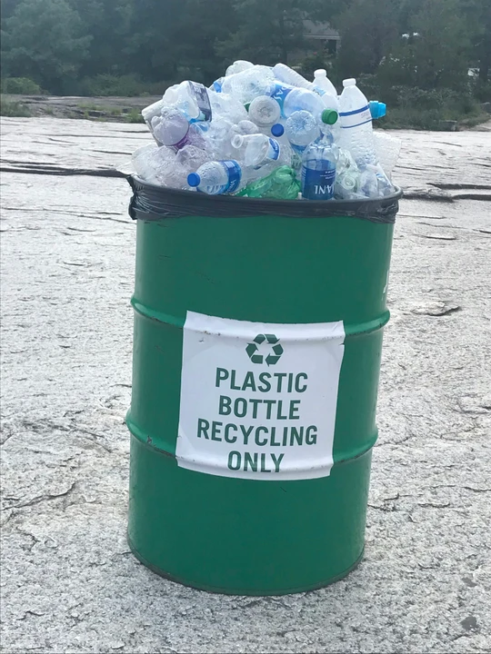
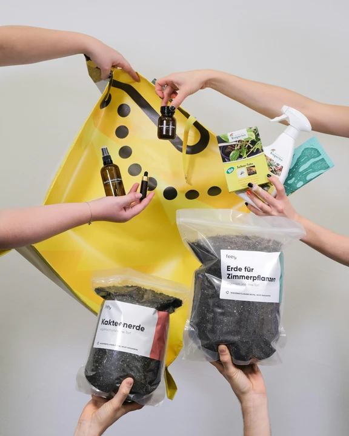

EXPLORE AND LEARN
Ideas for a Greener Tomorrow.
Discover simple sustainability practices, helpful insights, and ideas that can help businesses make a positive impact on the planet.

Why Businesses Should Care About Their Carbon Footprint?
Every business has an impact on the environment, from the energy it uses to the waste it produces. Understanding your carbon footprint is the first step toward reducing that impact.
By tracking emissions, saving energy, and choosing sustainable materials, businesses can make better decisions for both their operations and the planet.
At EcoMetric, we believe that a greener business starts with knowing where to make a difference.

5 Simple Ways to Make Your Business More Eco-Friendly
Going green doesn't have to be complicated or expensive. Here are five simple ways businesses can become more sustainable:
- Reduce unnecessary paper usage.
- Use energy-efficient equipment.
- Avoid single-use plastics.
- Practice proper waste segregation.
- Choose reusable or eco-friendly packaging.
Small changes can create a lasting impact when practiced consistently.
THINK GREEN. CHOOSE BETTER.
SUSTAINABLE PRODUCT DEVELOPMENTSustainable Products: Small Choices, Big Impact
The products we use every day can affect our environment. Choosing sustainable alternatives helps reduce waste and encourages responsible consumption.
From reusable packaging to products made from recycled materials, businesses can explore better alternatives without sacrificing quality and functionality.
At EcoMetric, we believe innovation and sustainability should go hand in hand.
NEED MORE INFORMATION?
Frequently Asked Questions
Learn more about EcoMetric and how your business can take simple steps toward sustainability.
What is EcoMetric?
EcoMetric helps businesses become more environmentally responsible through consulting and sustainable product development.
What is a Carbon Footprint?
It is the total amount of greenhouse gases produced by a person, business, or activity.
How can EcoMetric help my business?
We help identify environmental impacts and recommend practical ways to reduce them.
Do small businesses need sustainability solutions?
Yes! Businesses of all sizes can make a difference through simple sustainable practices.
Why should my business choose EcoMetric?
We make sustainability easier to understand and apply through practical, accessible solutions.
Ready to Make a Difference?
Every small action counts. Let's work together toward a more sustainable future.
Get in Touch